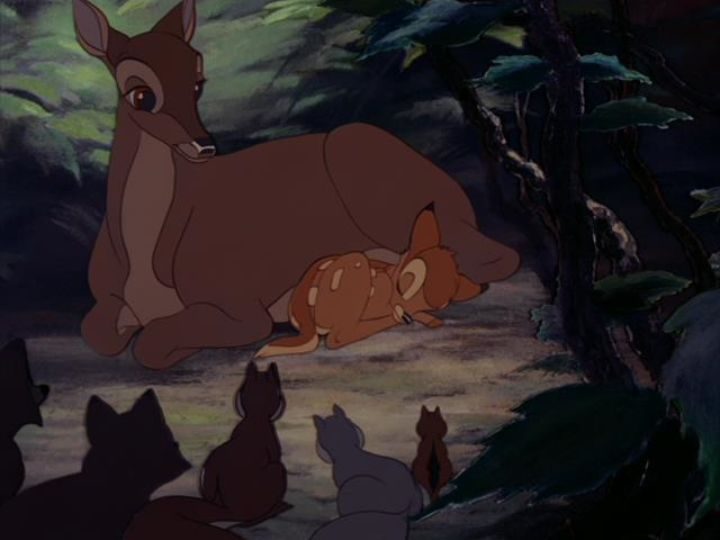

Whatever your top Disney movies might be, I have to assume that 1942's "Bambi" is on virtually everyone's list somewhere. That's because it's not only a cinema classic (standing tall even outside of animation), but a timeless classic. I think the movie pulls this off by basing the setting entirely in the forest, in an indescript-time, and basing the perspective entirely from the animals, never showing humans on screen. It was, and remains, a curious choice of story for Walt Disney Studios. This isn't a traditional Prince or Princess story, and it's not an old, open-license fairy tale. The movie was based on a 1923 novel, making it a relatively recent adaptation at the time. The story is told with a certain serenity too. It might still be a musical, like Disney's other movies, but no characters actually sing any of the songs; everything is sung by background choir. The creative team clearly took this production very seriously, producing something that should have received every award in existance at the time for the results. "Bambi" starts in the forest, upon Bambi's birth. The deer are treated as royalty, Bambi in particular: he's referred to as the "new Prince of the Forest" by the other animals that come to greet him, foreshadowing the confirmation that the "Great Prince of the Forest" (an older male deer) is his father. But for most of his childhood, Bambi is raised by his mother, learning how to walk and talk, and playing with the other animals. In particular, his best friends, a rabbit named "Thumper" that talks too much, and a shy skunk referred to as "Flower." The story follows from Bambi's birth up to his growth as an adult. His childhood is rendered honestly, and Bambi acts the way a one-year old human might. He smiles when others around him laugh. He stumbles a lot on his skinny legs at first. He's noticably shy and annoyed when meeting a girl his age for the first time. While portraying his childhood, there's a great beauty to how the forest is rendered, be it the sun peaking through the trees, or night-time, or raindrops pitter-pattering everywhere. It's splendid, like poetry in motion. It's also entertainingly fun, from the innocence of child laughter, to characters like old Friend Owl offering wise words like a cranky uncle.  Bambi's life isn't without tragedy, or the laws of change. As an adult buck, he and his friends are warned about romance in spring time, and despite their intentions, instantly fall in love at first glance, signalling a new act for their life. Love is overly simplified in "Bambi," but is so beautiful that I wonder why real life can't be so simple. There are dangers in the forest, some from other animals, but primarily from "man," the mysterious forces that remain outside of the camera. Even the animals know little about humans, only that they bring death when they come, and that they must stay away. The existence of man results in the climatic ending, and the movie is an effective warning for nature conservation.Heavily relying on multi-plane techniques for depth and camera movement, the visuals of the forest in particular are detailed. Colored aren't harsh, and the backgrounds have a washed-out painterly or soft colored-pencil quality to them. The animation of the animal characters is particularly detailed, a great hybrid of realism and Disney-trademark expression (the artists studied real animals to figure out how to draw them). Their work in "Bambi" would help guide how to draw animals for decades to come. Even if elements of the production are a bit outdated today, there isn't a thing I'd redo in any of it. I mentioned this music is all done in choir, and the songs are all beautiful. The voice acting is also quite good across the board, especially feeling accurate regarding child-versions of characters. The one gripe I might point out in "Bambi" is that there isn't a real story. This is a coming-of-age story, about Bambi's life from birth to adult, and about the circle of life in the kingdom of the forest. That might seem like there's a lack of direction or purpose to the impatient viewer, and there isn't any magical fantasy like in Disney's other movies, but I think this further justifies the movie as timeless. It's different from virtually every other Disney movie. Every element of it, from story to art to direction, is practically perfect.
- "Ani" More reviews can be found at : https://2danicritic.github.io/ Previous review: review_Balto Next review: review_Barakamon